Плакаты – основной жанр, в котором работает Юрий Тореев. Его произведения получили широкое признание как в нашей республике, так и в зарубежных странах.
Плакаты Юрия Тореева отличаются рядом ценных качеств: они злободневны и актуальны, в них отражаются насущные проблемы нашей жизни. При этом автор не навязывает ответа на заданный вопрос, но предлагает зрителю подумать и принять решение самостоятельно.
Рисунки на плакатах с полным основанием можно назвать виртуозными. Иногда это всего лишь лёгкое (и смелое) прикосновение кисти, или фотография простейшего сюжета – но композиция в сочетании с надписью содержит глубокий, а порой и неоднозначный смысл.
Надпись на плакате является важным компонентом работы Тореева. В большинстве случаев она сделана курсивом от руки, а иной раз даже небрежно, с помарками, нарочито «антикаллиграфично». Это тоже своего рода художественный приём. Такая надпись как будто адресована единственному зрителю – Вам. Это как будто личный подарок, или письмо от Художника. Зритель проникается доверием к Художнику и его произведению. Строгий шрифт надписи употребляется Тореевым только в театральных афишах к спектаклям классического репертуара.
И ещё одно важное качество отличает плакаты Юрия Тореева: артистизм, дух Чистого Искусства. Это то, чему нельзя научиться, что дано от Бога. Всмотритесь в работы Юрия Тореева, не жалейте времени – и вы почувствуете себя более умными и богатыми.
Этот плакат – один из тех, которые созданы за несколько минут (так кажется зрителю). Он не потребовал никаких красок, кроме чёрной, никаких усилий по отработке деталей формы – он сделан якобы небрежно, эскизно, по внезапному наитию. Но сколько в нём смыслов и подтекстов, как глубока выраженная в нём идея, как беспощадно изобличает Художник грехи человечества!
Прежде всего – подвергается критике формула древних римлян «Человек разумный». У разумного человека голова – вместилище разума – венчает фигуру, возвышается над плечами, поскольку она – вместилище Разума, отличающего человека от животных. Глаза разумного человека устремлены вперёд и вверх – он носитель прогресса в культуре и веры в божественные силы. Здесь же лицо человека обращено вниз, и изменить это положение он не может: формат плаката не позволит. У этого человекоподобного существа есть язык, чтобы общаться с другими людьми и сообща трудиться. Но – увы! Этот язык волей Антипода (диавола) превратился в ядовитую змею и стал непригоден для общения с другими людьми. Он может только жалить и убивать.
Руки Homo Sapiens непригодны к работе. Левая рука недоделана, в ней нет ни мышц, ни пальцев. Правая похожа на бревно – она несгибаема.
Человек на суде Художника получил жестокий приговор; он не оправдал надежд Господа Бога, не приблизился к Его образу, не выполнил Его повелений. Но, может быть, этот горький вывод не окончателен? Может быть, Homo Sapiens создан Художником в минуту жизни трудную, и есть ещё надежда вернуться человеку на праведную тропу?..
Harmony 2014
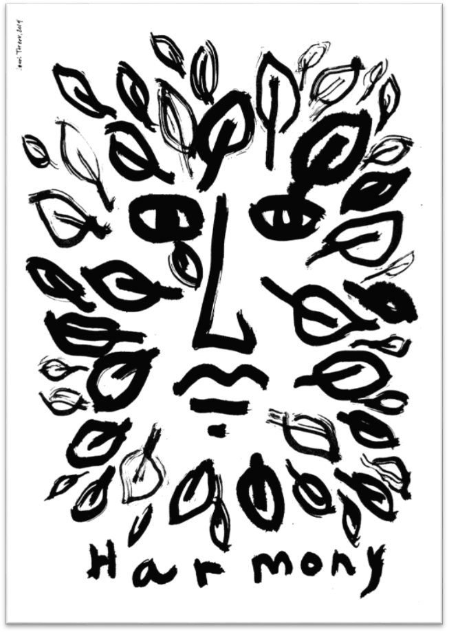Художник пытается найти для Человека оправдание его существования на Земле, и тем самым утвердить его право на небольшой «кусочек счастья». Здесь человеческое лицо, хотя и схематично нарисованное, занимает центральную позицию в плакате. Ему здесь неплохо – он окружён древесными листьями и пребывает в гармонии с природой (о чём извещает нас подпись). Можем ли мы этому поверить? Вряд ли.
Глаза «Человека» обведены чёрной каймой, губы слегка «надуты». Из правого глаза вытекает крупная слеза (похожая на листик). Контакты с природной средой не радуют Человека. «Природа» эта, символизируемая ворохом листьев, намеренно лишена волей Художника своей гармонии и красоты. Слово «гармония» он произносит с иронией, предполагая на самом деле нечто противоположное.
Отчего же не верит Художник в спасительность для человека гармонии с природой? Почему на его плакате мы ощущаем враждебность двух сил: природы и человеческой деятельности? При этом симпатии Художника, очевидно, на стороне природы. К человечеству он относится с более или менее явным осуждением, как к врагу природы.
Together 2015 2
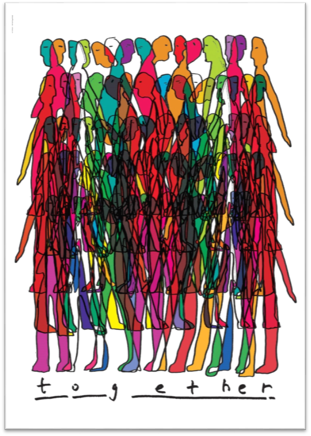Взглянем, например, на этот весёлый яркий плакат. Можно воспринять его как схематическое изображение большой группы молодых людей неопределённого пола. Что представляют собой эти люди? Это, в сущности, схемы, а не люди. У них одинаковые лица, руки, ноги, раскрашенные в стандартный набор спектральных цветов. Они изображены тесной группой, но на самом деле у них нет общности: каждый смотрит в свою сторону и окрашен в свой особый цвет. Рука Художника изобразила их в тесном единстве, но тут же разоблачила (точнее, уличила) в отсутствии настоящего единства. Не могут быть единомышленниками люди, у которых отсутствует половина головы.
Иными словами, я вижу в этом плакате пародию на ту разновидность современной молодёжи, которая неспособна к делам более нужным, чем «тусовки».
Together 2015
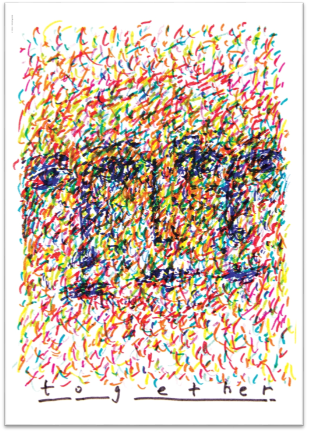На этом плакате мы можем рассмотреть более подробно лица молодых людей – участников «тусовки». Наше подозрение оправдалось: у них нет лиц. Вместо этого мы видим квази-импрессионистическую россыпь разноцветных мелких штрихов. У этих молодых людей нет того, что мы называем личностью: нет твёрдых убеждений, высоких моральных принципов, достойных целей в жизни, высоких идеалов… Всё это отрывочно, неясно, изменчиво…здесь слово together приобретает явно обратный смысл - `seprit. Личность пребывает где-то отдельно от себя, так как она раздроблена и рассыпана на тысячу фрагментов.
Touching 1
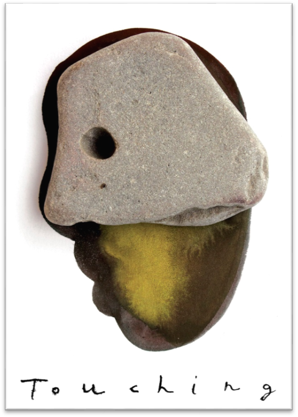Возможно ли обнаружить в фигурах молодых людей на плакатах нечто присущее Человеку (достойное этого звания), чтобы имя это «звучало гордо и великолепно» (по выражению одного из обитателей Дна)? На плакате Touching 1 мы видим такой эксперимент. Голова Человека – это не просто картофелина или боб: верхняя часть головы укреплена камнем. Этот «боб» чего-то начитался, чему-то научился, твёрдо запомнил какие-то принципы, правила поведения, взгляды…Теперь он полностью подготовлен к жизни и непробиваем. Однако, пригоден ли он к реальной жизни? Способен ли он самостоятельно мыслить, развиваться, принимать решения? В его облике всё говорит о тупости и консерватизме, достойном разве что Собакевича (если не хуже). Круглое отверстие в его каменном черепе похоже скорее на пулевую рану, чем на человеческий орган зрения. Видит ли он что-либо этим глазом? – Нет, это не наш идеал.
Присмотревшись ещё более внимательно, замечаем, что «камень» на голове «человека» похож на голову телёнка, у которого справа угадывается тупой нос и губы, а глаз оказывается более уместным на голове животного, чем человека. – Согласитесь: телёнок – не пример для подражания.
Touching 2
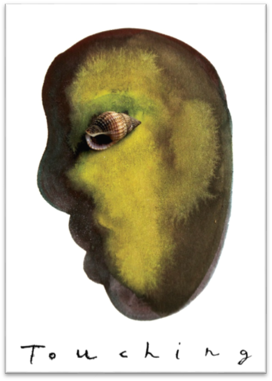Если картофелине приделать глаза, она не станет умнее – вот мысль второго плаката на ту же тему, что и предыдущий. Как сказал Поэт: «На слепую кишку /хоть надень очки/ - кишка всё равно/ничего б не видела. Действительно, глаз у этой картофелины красивый, но это всего лишь пустая скорлупка от моллюска. Никогда не заблестит этот «глаз» в ответ на зрелища неба, моря, цветов и птиц.
Touching 3

Юрий Тореев искренне желает усовершенствовать человеческую природу. Его фантазии – не просто карикатуры, но поиски средств усовершенствования человеческого мышления, духовного зрения, интеллектуального развития. В третьем плакате на тему « Touching» Художник предлагает кардинальный способ решения всех проблем – укрепление физического здоровья. Здесь используется метафора «живот = жизнь». На плакате изображён идеально здоровый человек – ведь у него вместо живота – гладкий яйцевидный камень. Это настолько хорошо, что всё остальное – руки, ноги, голову – изображать не обязательно. Эти части тела – всего лишь придатки к образцовому животу. В самом деле: что может быть крепче камня и прекраснее яйца?
Поверим Художнику и займёмся укреплением своего здоровья. Авось, остальное приложится.
Stress 2015 (1) Protect Your Mental Health!
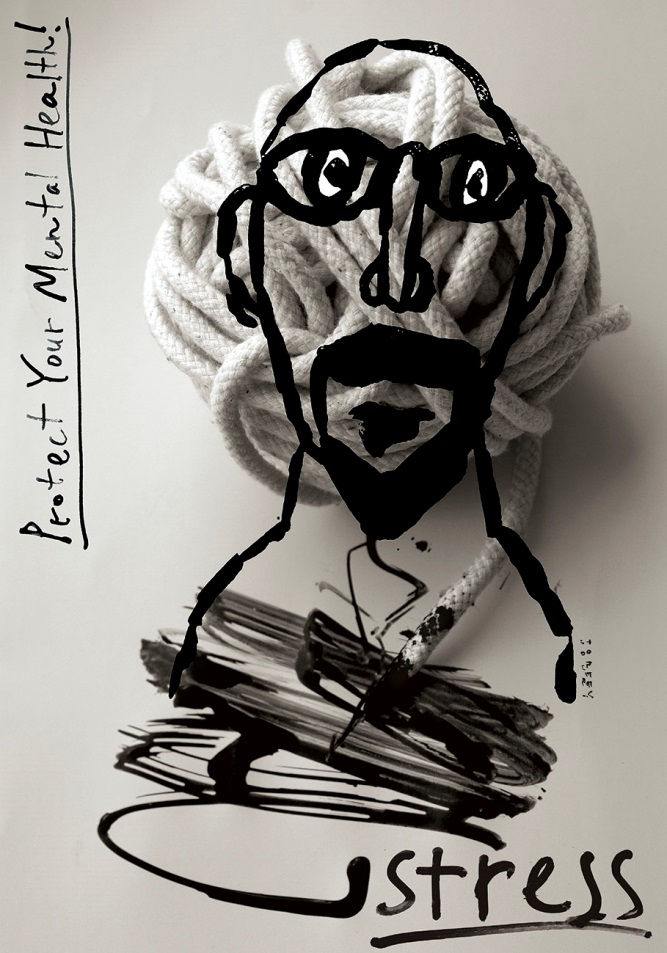«Защита вашего умственного здоровья»
Этот плакат может присниться в страшном сне.
Художник уподобляет человеческую голову мотку бикфордова шнура, уже начавшего гореть. Ещё минута – и ваша голова взорвётся. На лице человека – предельный ужас, страшное напряжение, но он бессилен остановить процесс разрушения жизни; его плечи бессильно опущены, руки отсутствуют, остановить катастрофу нечем.
Stress 2015 (3)
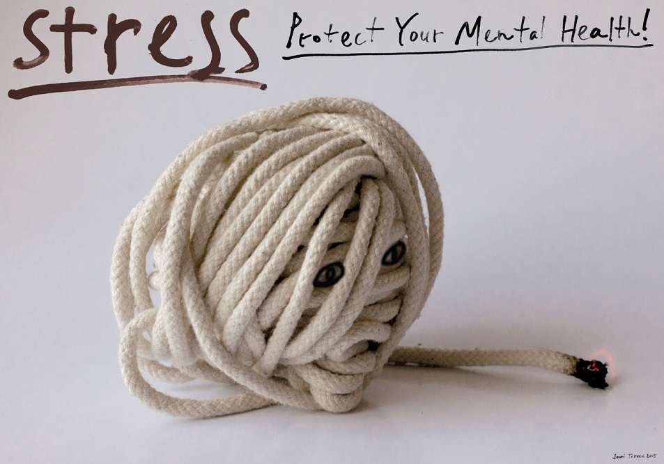Этот мотив – повторение варианта Stress 2015 (1). Композиция лаконична, почти без деталей, но внушает не менее ужасные чувства.
Stress 2015 (2)

Иногда носителем стресса может быть человек, не подозревающий этого. У него за спиной примостился диавол, подобно тому, как это было с одним парубком из повести Гоголя. У этого человека – бессознательного носителя зла – нехватает ума и чуткости, чтобы осознать опасность и прогнать диавола. Художник выразил эту мысль иносказательно, лишив человека на плакате нижней части туловища.
В самом деле, что хуже? Глупая голова, или пустые портки?
И то, и другое до добра не доведёт.
Stability 2016
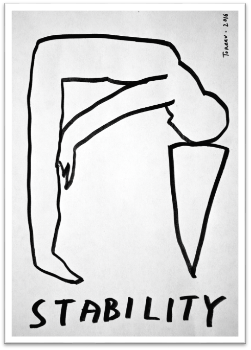Как предотвратить роковые последствия накопления оружия разными государствами и обострения противоречий между ними? Что может подумать «простой человек», увидев и услышав подобное предупреждение? Не придёт ли ему на ум мысль о своём индивидуальном бессилии как-либо повлиять на ход мировых событий?
На этот вопрос отвечает плакат Юрия Тореева. Взгляд Художника нельзя назвать оптимистичным. Отдельно взятый человек бессилен что-либо изменить в историческом процессе – особенно в лучшую сторону. Всякие попытки в этом направлении аналогичны забиванию клина в каменистую почву собственной головой. Это можно было бы повторить также и о массовых протестах человеческих толп против антинародной деятельности правительств.
Прошу не считать этот вывод программным пессимизмом. Не нами было уже замечено, что силы истории по природе своей непредсказуемы, а стало быть, неуправляемы слабым человеческим умом. Печально, но факт.
LiFe (2018)
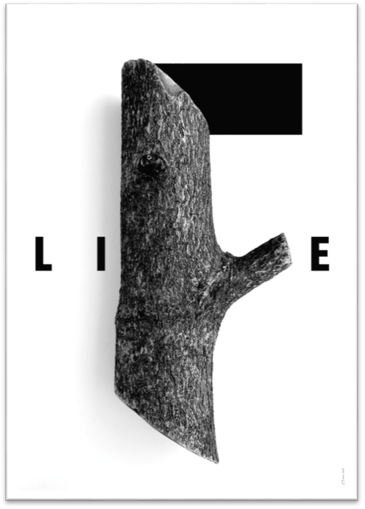Вспомним старинную мудрость: без нормы не может быть свободы. И добавим: без суровой критики не может быть оптимизма (точнее – веры в победу добра над злом).
Все эти старые истины вспоминаются, когда видим плакат Юрия Тореева «Life». Здесь есть чисто-черное и чисто-белое, но победителем безусловно остаётся черно-белое, потому что оно – живое, нерукотворное, созданное не нами, но Природой, которая умнее и сильнее нас. К тому же – прекраснее. В дереве есть что-то родное человеку, близкое, тёплое, понятное.
Геометрическая форма – изобретение человека, полезное ему, но в соревновании органического и геометрического побеждает первое. Машина без присмотра ржавеет, дом плесневеет, рассыхается и разваливается, всё созданное человеком зарастает травой и покрывается землёй. Мыслящий художник утверждает: любите жизнь, храните и поддерживайте её, потому что нет большей ценности на Земле, чем Жизнь. «И всякий живущий и верующий в Меня не умрёт вовек». (Ин.11:26).
2016 – Holy Year of Mercy (Год милосердия)

Две человеческие руки, как белые птицы, летят на зов того, кто нуждается в помощи и поддержке; они готовы совершить свой бескорыстный труд, не считаясь с препятствиями, не требуя награды. Счастливого пути и удачи вам, Птицы-Руки!
Refuges (Политические эмигранты)
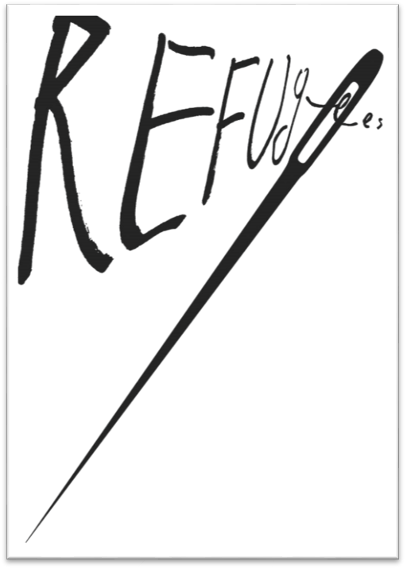В наше суровое время эти люди составляют немалую часть человечества. Они покидают свою родину по разным причинам, но все эти причины достаточно серьёзны. Иначе не решились бы такие массы людей в странах Европы, Азии, Африки и пр. покидать родные места и отправляться в неведомые края, где их ждёт неизвестно какая судьба (и скорей всего, не намного лучшая, чем на родине).
Юрий Тореев нашёл способ показать всё это одним могучим движением кисти. Он написал одно лишь слово и изобразил один предмет – иголку. Плакат рассказывает о прошлом, настоящем и будущем этих людей (эмигрантов); вы проникаетесь сочувствием к их нелёгкой судьбе и решаете (про себя) ни в коем случае не повторять ошибки этих жертв судьбы.
Вас убедили всего-то одно слово и одна линия – игла с таким узким ушком. Вы увидели, что на своей родине эти люди (эмигранты) жили хорошо, имели прочное общественное положение. Снявшись с места и направляясь в чужую страну, они быстро теряют социальный статус, уважение окружающих, привычки и обычаи. Они превращаются в изгоев. Наконец, прибыв в намеченную страну, они с большими трудностями (как будто пролезая сквозь игольное ушко), худо-бедно устраиваются здесь на жительство, теряя при этом свою профессию, статус, имущество…Бывший архитектор работает чертёжником, бывший художник – маляром (и это ещё неплохо); бывший учитель торгует с лотка папиросами.
Всех их ждёт унылая жизнь, в которой главная цель – добывать хлеб насущный. Вторая половина плаката – пустая белая плоскость: никаких перспектив.
Человек и природа 2017
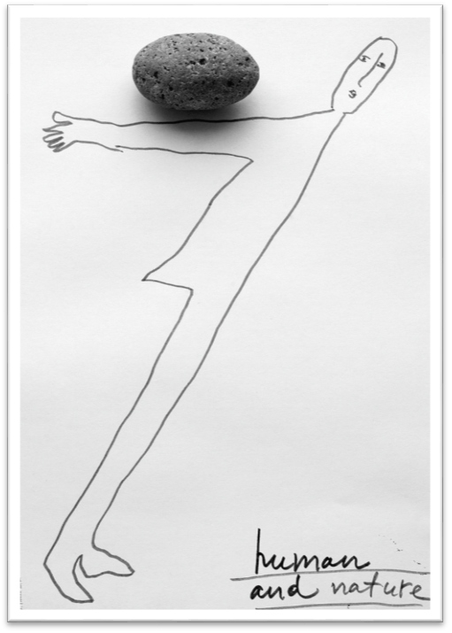Мыслящий художник, озабоченный проблемами человечества, не может обойти своим вниманием взаимоотношения Человека с Природой. В классическом русском искусстве природе отводилась роль Матери человечества, кормилицы, заступницы. Природу обожествляли, молились ей о даровании всяческих благ, любовались её красотами. В ХХ веке, в связи с ростом городов и бурным развитием капитализма возникла опасность уничтожения природных ресурсов – вырубки лесов, высыхания рек, истощения почв, гибели множества видов животных и птиц.
Всё это не проходило (и не проходит) безнаказанно. В ответ на человеческую агрессию Природа мстит: ухудшением климата, засорением воздуха газами и аэрозолями, снижением плодородия (или уничтожением видов) диких животных и птиц. У человечества появилась ещё одна тяжёлая забота – беречь Природу от катастрофической порчи, поскольку Земля, превратившись в пустыню, не сможет носить на себе людей.
Художник выразил эту ситуацию как нельзя более наглядно: тощий и узколобый Человек падает под непосильной ношей – Природой, которая как бы говорит ему: « или ты меня поддержишь – или я тебя опрокину и уничтожу».
8 марта 2017г.
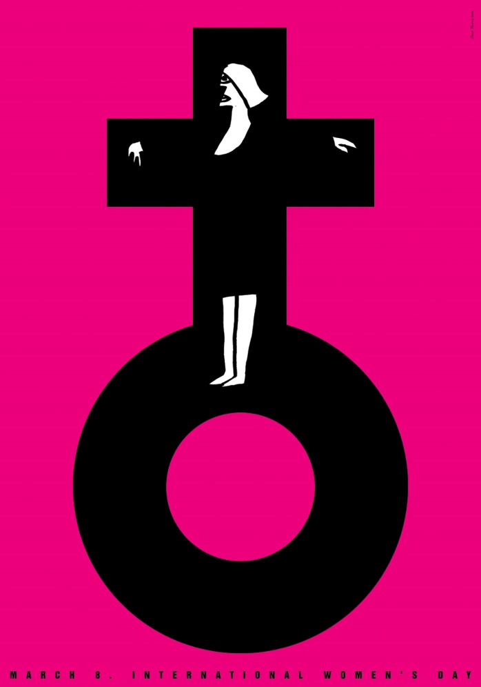Основной объект внимания Юрия Тореева – Человек, причём в его мужской ипостаси. Однако Художник уделяет внимание также судьбам женской половины рода человеческого. Увы, судьбы эти мало чем отличаются от прежних, столетней давности.
На этом плакате мы видим женщину, распятую на кресте своей физичесой природы. Она распята не за какие-то проступки или слова, а только за то, что принадлежит к женскому полу. На ней из века в век остаются всё те же обязанности и труды: рождение и воспитание детей, домашние заботы о пище, гигиене, уюте и т.д. Чем вознаграждаются все её труды и заботы?
Coexistense 2017
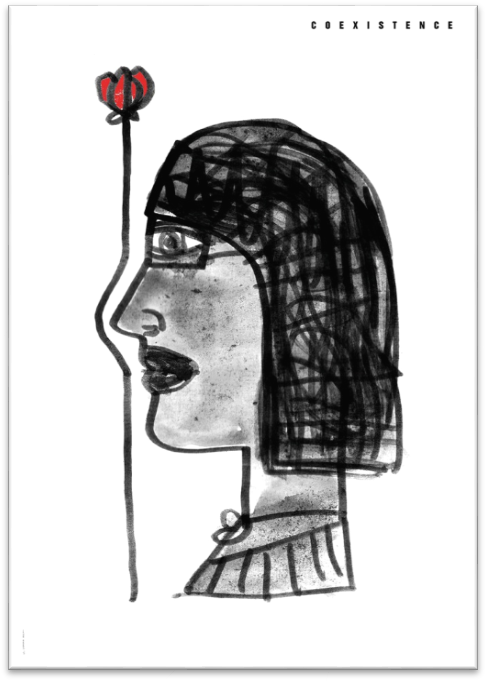На праздник 8 марта ей преподносят цветок. Художник убедительно показал, что этот «презент» ничтожно мал по сравнению с заслугами Женщины. Она не может даже увидеть эту розу и почувствовать её аромат. Праздник 8 марта и дарение цветов – это, по существу, пустая формальность, дань обычаю (или, как говорят мужчины, «повод для выпивки»). Юрий Тореев нашёл простейший и убедительный способ выразить сущность праздничных обычаев 8 марта: женщине они, по совести говоря, ни к чему. Её лицо и цветок на плакате не соприкасаются, они чужды друг другу. Они всего лишь «сосуществуют».
Right to freedom (Право на свободу)
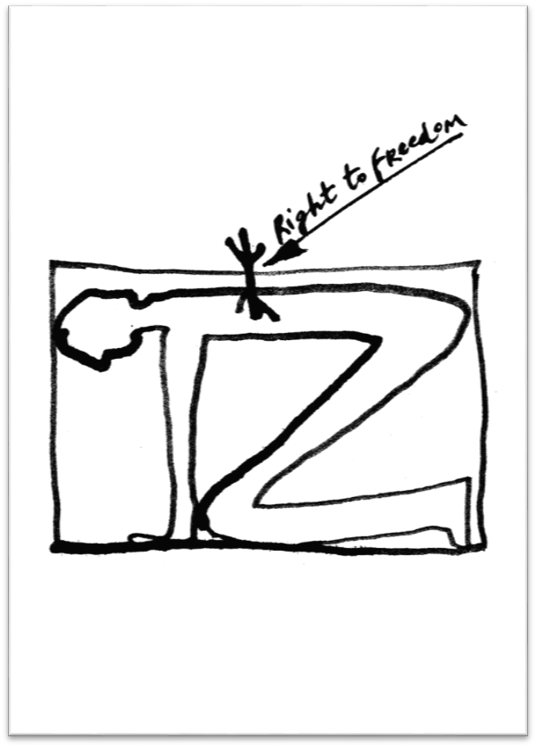Много ли прав на свободу имеет человек, скорчившийся в тесном ящике и привинченный к крышке большим винтом?
Почему это право не осуществляется? Художник не отвечает на этот вопрос: он не знает. Мы же с вами знаем, что «свобода» - это скорее мечта или иллюзия, чем реальность. Вся наша жизнь и деятельность подчинены Необходимости. Это наш истинный повелитель и вождь, а мы – его рабы. Он держит нас на коротком поводке, позволяя лишь иногда и в каких-либо мелочах проявить свой каприз (да и то, если разобраться, каприз не возникает случайно).
Gde twoj golos 2015
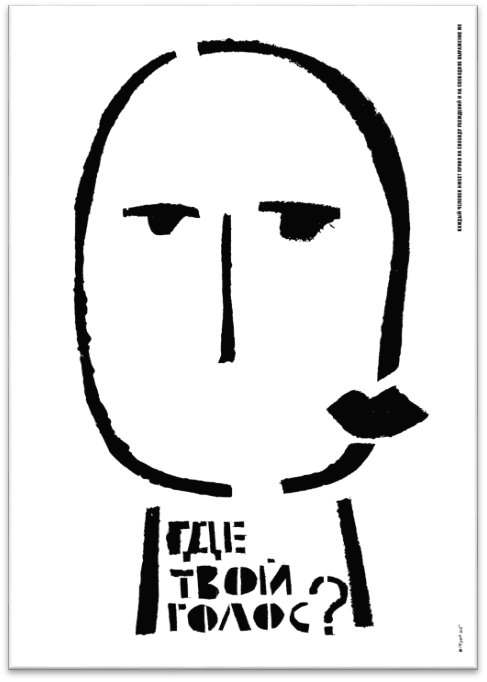Казалось бы, самый свободный орган человеческого тела – язык. Ему позволено говорить или петь , что угодно (если его никто не слышит). Однако, Художник сомневается в осуществимости даже такой небольшой степени свободы.
Симпатичная девица на плакате использует свой голосовой аппарат в качестве украшения лица (нечто вроде бантика). Говорить что-либо она решительно отказывается, считая это (по-видимому) излишним и бесполезным. Неужели она права?..Говорят же в народе: «Язык мой – враг мой»…
Charlie Hebdo 2015
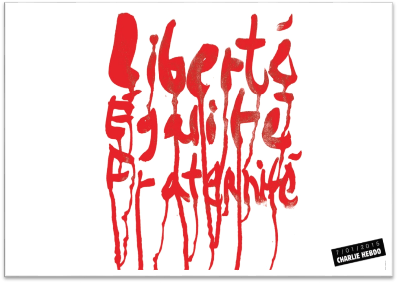«Liberte – Egalite – Fraternite»
Прекрасные лозунги, под которыми сражались на баррикадах Парижские коммунары. Было ли суждено им осуществиться в ХХI веке? Увы, они были написаны неверной рукой и дешёвой краской; их смыли дожди и присыпала пыль. Не осталось в них теперь ни красоты, ни смелости духа; кто же поверит им? Кто напишет эти слова на своём знамени? Прошли героические времена парижских коммунаров; забыты призывы Русской революции 1917 года. Человечество осознало неизбежность капитализма со всеми его преимуществами и пороками. Ещё один сезон дождей – и красные буквы смелых призывов будут смыты. Останутся лишь печальные воспоминания о заблуждениях молодости. Краткое резюме.
Проблема Человека (в философском плане) так же неразрешима однозначно, как проблема атома или космоса. Каждый исследователь природы человека – писатель, художник, философ, психолог – отображает этот объект по-своему, в меру своего опыта и таланта.
Юрий Тореев, мягко говоря, не склонён идеализировать Homo sapiens. Он настроен критически: шершавым языком своего плаката он пытается очистить человечество от пороков. Это дело его жизни, его совести.
Л. Миронова,
25.03.2018